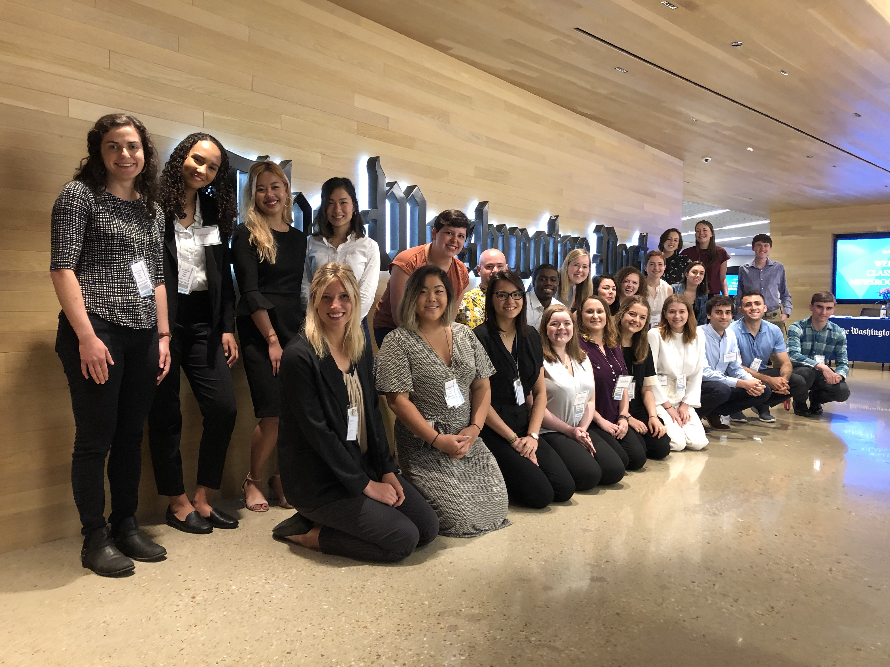
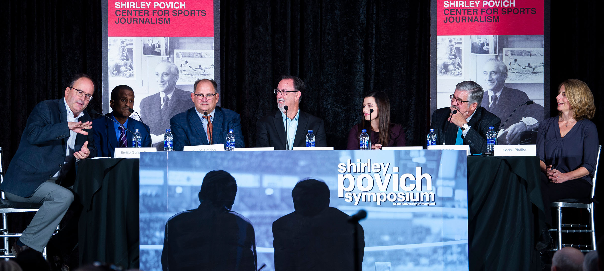

Big-name American outlets present perhaps the most notable disparities in terms of their staff’s demographics. According to an analysis by the American Society of News Editors on Google Trends, The Washington Post staff is 71% white. The New York Times, The Wall Street Journal, and USA Today are all approximately 80% white. Slate Magazine and The Boston Globe top them all at 82%.
But it isn’t only large corporate media outlets failing to be inclusive. More locally-oriented news organizations across the U.S. remain severely unrepresentative of their respective readers. The Baltimore Sun, despite the city of Baltimore being 70% non-white, operates out of a newsroom that is 81% white. While population of Houston, Tex. itself is 73% racial minorities, The Houston Chronicle is still 73% white. The Miami Herald serves a city that is 11% white and 71% Hispanic while its newsroom is essentially 50-50 white and Hispanic.
And while 40% of newsrooms gained racial diversity to some extent between 2001 and 2018, 16% lost diversity. According to the data compiled by the American Society of News Editors, The Florida Times-Union, The Providence Journal, and The Kansas City Star were among those that saw some extent of a decline in employees of color.
“I feel like we don’t talk about diversity in the newsroom enough,” said Nhaya Vaidya, a sophomore journalism major at the University of Maryland. “Diversity needs to be pushed more in this industry, even though I see it slightly improving.”
These racial disproportions have been dismissively explained as a result of “not enough ‘diverse’ candidates [entering] journalism on the ground floor to begin with,” as Ben Williams told Buzzfeed when he was the digital editorial director of New York Magazine. So in 2015, Alex T. Williams published a study in Columbia Journalism Review outlining the journey of minority students from their journalism studies to their success in the field.

While the study was conducted and published five years ago, the patterns Williams discovered are still prevalent today. He found that minorities accounted for about a quarter of journalism and communications majors between 2000 and 2009—and a similar percentage graduated between 2004 and 2013—but these students were 17% less likely to land a job in print journalism within a year of graduating than those who were white. For public relations jobs, minorities were 25% less likely to be hired within the same time frame than whites.
These discrepancies in post-grad employment can be traced back to structural links between race and privilege, particularly due to the profession’s tendencies to favor those of white and often wealthier backgrounds. This inherently grants to select students easier access to journalistic resources, the ability to commit to unpaid internships, even writing for campus publications at universities that are also often majority Caucasian—all of which can provide a better sense of professional qualification to employers.
Further, similar to certain other professional spheres that can appear “gatekept,” many jobs are given on a networking basis, with positions quickly filled by those affiliated with people already employed at these establishments or with similar backgrounds and experiences. In turn, people are color remain unable to get their foot in the door of this historically Caucasian industry—and serve as successful examples for future generations of minority journalists.
“I don’t normally see Indian journalists [and] for a while I was like, ‘Well, how would I be able to do that if I don’t see others like me doing it?’” Vaidya said. “It’s not fun to not see yourself represented.”
Michael Kim, also a sophomore studying journalism at the University of Maryland, voiced similar concerns as a Korean American.
“[My parents] constantly would tell me that no newspaper or news network will hire a Korean and that they only hire ‘white Americans,’” Kim said. “Although I know that this isn’t necessarily true, I do see where they’re coming from. There isn’t a large number of reporters who look like me or whose parents have the same backgrounds as mine.”
Kim not only sees improved minority representation as a way to inspire younger people of color to pursue a career in the field, but also a means of generally higher quality journalism.
“This problem of underrepresentation I think creates a feedback loop that discourages young reporters [of color] from joining the field,” he said. “It also takes away from a population’s perspective when it comes to news. Diversity brings many different viewpoints into a newsroom that can help people report stories better.”

The solution to the lack of diversity throughout the field has been echoed across countless publications for decades: Hire people of color. Give minorities a way in.
“It’s not up to people of color to do this work alone,” Dodai Stewart, The New York Times’ deputy Metro editor, told CJR in 2018. “The people who have the power are the ones who need to fix this.”